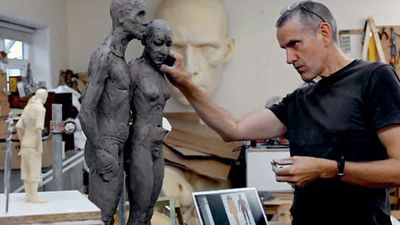
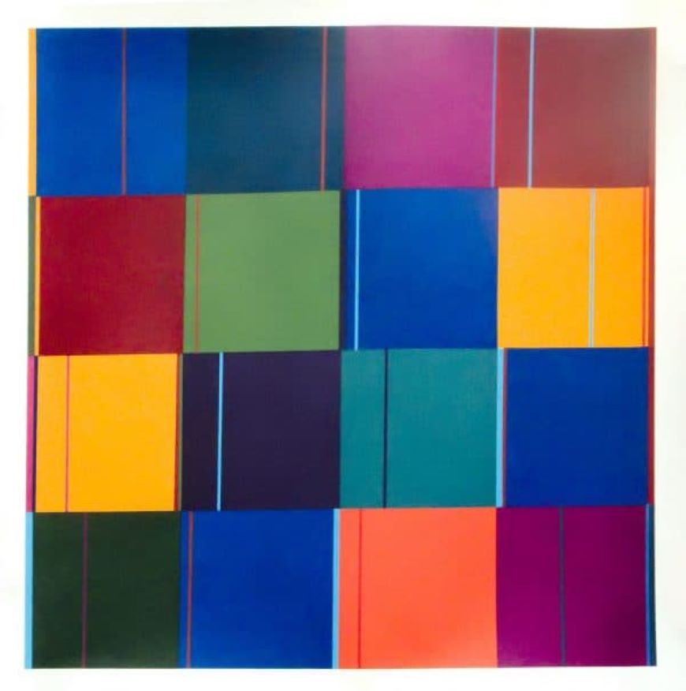
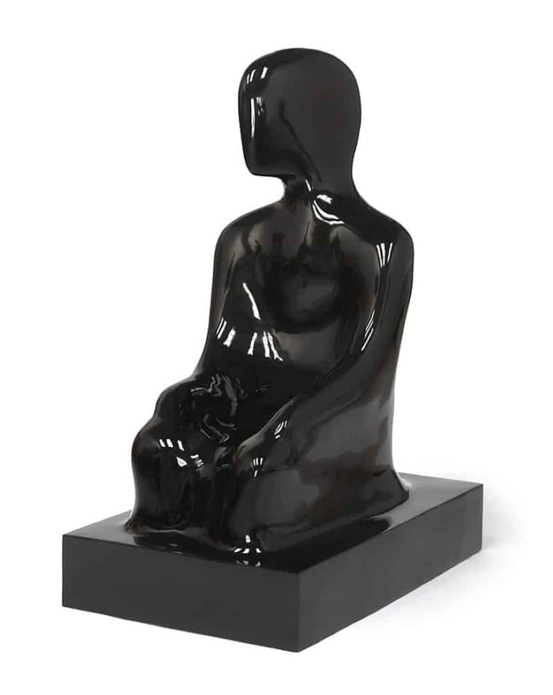
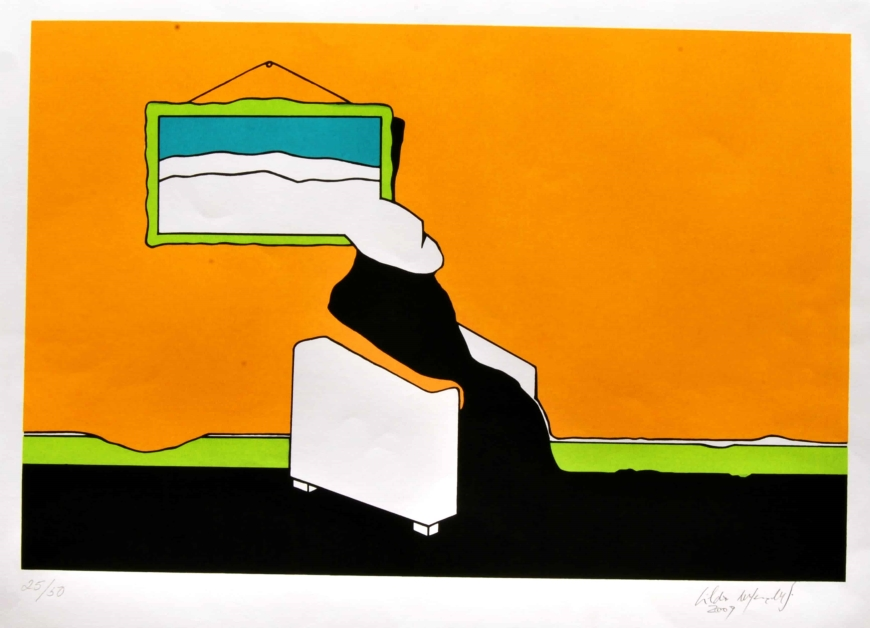

Definição
A Arte Contemporânea ou Arte Pós-Moderna é uma tendência artística que surgiu na segunda metade do
século
XX. Sua origem costuma ser relacionada à década de 60 e ao movimento pop art.
A Arte Contemporânea se prolonga até aos dias atuais, período esse denominado de pós-modernismo,
propondo
expressões artísticas originais a partir de técnicas inovadoras.
Do latim, o vocábulo “contemporanĕu” corresponde a união dos termos “com” (junto) e “tempus”
(tempo), ou
seja, significa que ou quem do mesmo tempo ou época. Utilizamos essa palavra como adjetivo para
indicar o tempo presente, atual.
Exemplos
A Arte Contemporânea abarca alguns movimentos artísticos importantes entre os quais, destacam-se:
Pop
Art,
Arte Conceitual, Arte Digital, Fotografia, Instalação, Arte Urbana, Body Art, Arte povera, Arte de
Novas
Mídias, Hiperrealismo, Fotorrealismo, Op Art e Arte cinética.
No Brasil, a Arte Contemporânea começou a se desenvolver a partir da década de 1950, com o movimento
vanguardista conhecido por Neoconcretismo. Desde então, alguns artistas se tornaram conhecidos por
uma
arte
inovadora, viva e autoral.
Artistas

Ron Mueck
O artista australiano Ron Mueck, nascido em 1958, é um daqueles nomes que não passam despercebidos na arte.Sua produção consiste em esculturas hiperrealistas, nas quais reproduz figuras humanas, em grandes ou pequenas dimensões.
O escultor utiliza materiais como resina, silicone e fibras de vidro para criar personagens incrivelmente parecidos com "uma pessoa de verdade".
As figuras quase sempre estão em situações que demonstram a vulnerabilidade do ser humano, a solidão, o amor, a vida e a morte.
Rosana Paulino
A paulistana Rosana Paulino possui um trabalho bastante potente. Os principais temas que
aborda
estão ligados a questões étnicas, sociais e de gênero.
Sua preocupação é revelar os diversos tipos de agressão que a mulher negra sofre na
sociedade
brasileira; resquícios da escravidão que assolou o Brasil por 400 anos.
Obras


